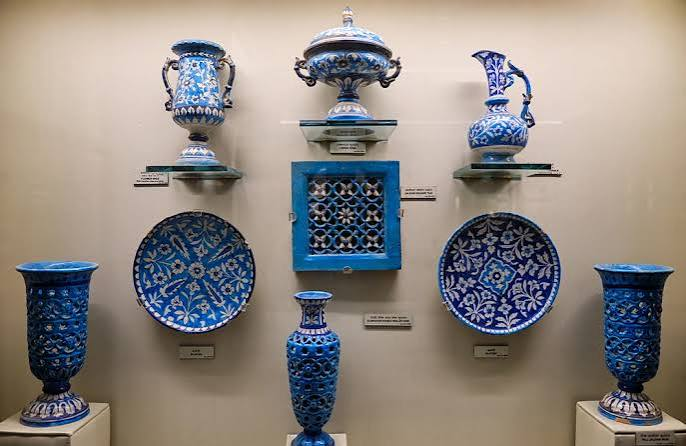
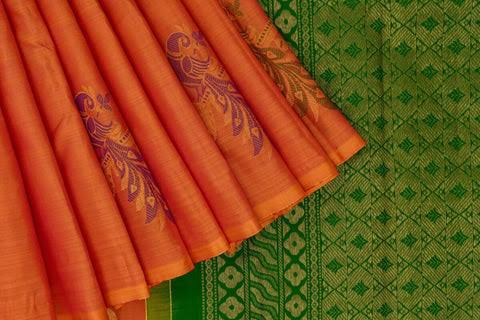
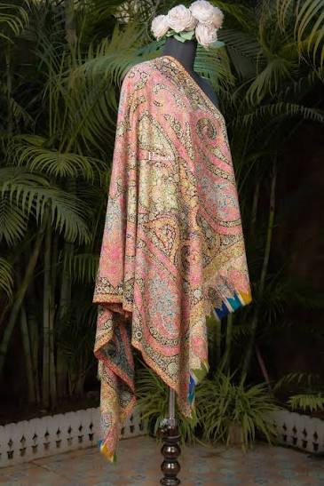
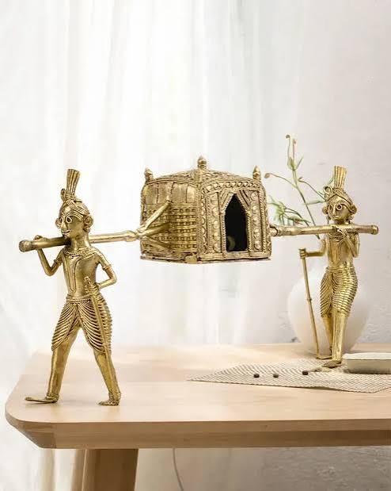
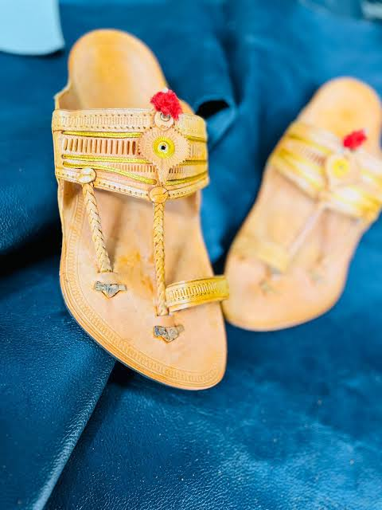
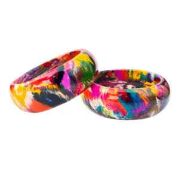

{kind=link}

Why does handmade cost more? The math behind slow design.
Deconstructing the 180-hour production timeline of authentic Kashmiri Pashmina versus fast fashion synthetic imitations.
Discover the people, slow human processes, and modern design thinking behind contemporary Indian artisanal mastery.

Jaipur Quartz & Glass Frit Technique • Modern Living Space Integration
Unlike mass production designed for disposability, KALA objects honor the slow, human continuum from raw earth to modern utility.
Natural Multani clay, wild Mulberry silk, Bankura riverbed earth, and lead-free quartz frit.
Shaped by multi-generational artisan families preserving ancient muscle memory.
Lost-wax casting, hand-spinning Pashmina, double-Ikat resist dyeing, and hand-chiseling.
Crafted through a slower, rhythmic human process taking anywhere from 14 to 120 days.
Reinterpreted into minimalist forms tailored for modern urban architectures.
A tactile centerpiece that brings warmth, soul, and provenance into everyday modern living.
Follow the step-by-step transformation of raw materials into curated design pieces. Interactive process breakdown for Jaipur Blue Quartz Pottery.

Unlike traditional pottery, Jaipur Blue Pottery uses no clay. Quartz powder, glass frit, Multani Mitti (Fuller's Earth), and natural gum are combined by hand to create a smooth, resilient paste.
Not a mass catalog. A highly selective collection of 10 iconic Indian handicrafts re-engineered for modern lifestyle aesthetics.
Craft: Quartz & Glass Frit Firing • Master Guild, Jaipur
Minimalist cylindrical geometry adorned with natural cobalt floral motifs. Designed for contemporary console tables.

Kanchipuram SilkCraft: Mulberry Silk Korvai Weave • Smt. Kamala Devi, Tamil Nadu
Subtle muted gold zari woven into a structured dark slate layout. Drapes effortlessly on modern sofas or evening couture.

Kashmir PashminaCraft: Hand-spun Changthangi Cashmere • Srinagar Weavers
Featherweight 12-micron natural Pashmina with hand-twisted subtle raw fringes. Minimalist neutral shade gradient.

Bengal DhokraCraft: 4,000-Year Lost-Wax Brass Casting • Bankura, Bengal
Non-ferrous recycled brass molded over beeswax structures. Unique one-of-one tactile desktop artwork.

Kolhapur LeatherCraft: Vegetable Tanned Leather & Hand-braiding • Maharashtra
Traditional hand-braided toe loop re-engineered with cushioned memory footbed for contemporary urban walking.

Jaipur Lac GuildCraft: Natural Tree Resin (Lah) Molding • Maniharon Rasta, Jaipur
Purified natural lac resin mixed with earth pigments and hand-inlaid raw brass wire. Warm, organic tactile feel.
Craft doesn't belong only in museum glass cases, annual festival fairs, or dusty souvenir stands. It belongs in contemporary urban homes, everyday wardrobes, and mindful modern rituals.

Paired with raw concrete architectural dining tables.
₹4,800Draped over minimalist Scandinavian bouclé sofa.
₹18,500Accent piece on floating oak library shelf.
₹7,200Design Insight: Traditional Indian objects carry rich material weight that grounds cold modern minimalism with warmth, history, and human touch.
View Interior Curation
42 Years Active Guild Leadership
Direct Revenue Share to Artisan Guilds

"When I loom silk, I do not just interlace threads. I am preserving a rhythm that my grandmother taught me when I was nine years old. KALA gives our craft the modern respect and fair value it truly deserves."
Kamala Devi leads a self-governed guild of 18 master women weavers in Kanchipuram. Under KALA’s co-creation program, her cluster works directly with contemporary designers to adapt traditional motifs into minimalist home throws and unisex stoles.
KALA bridges historical craft execution with contemporary form factors, converting forgotten ethnic souvenirs into desirable modern design icons.


A limited collection of 50 individually numbered pieces combining Bengal Kantha structural embroidery with raw Kashmiri hand-spun cashmere.


Essays on slow craft economics, material provenance, and modern Indian design philosophy.
Deconstructing the 180-hour production timeline of authentic Kashmiri Pashmina versus fast fashion synthetic imitations.
How a clay-less blend of quartz stone frit, Multani earth, and cobalt oxide creates an iconic indestructible blue ceramic.

From Dhokra bronze castings in Paris lofts to Kanjeevaram silks in Scandinavian living rooms.